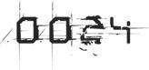

Over the next twelve hours, chaos continued to reign on Frobozz as every gunter in the OASIS scrambled to reach the planet and join the fray.
The Sixers had dispersed their grand army across the globe in a bold attempt to blockade all 512 copies of the Zork playing field. But their forces, as vast and well-equipped as they were, were spread far too thin this time. Only seven more of their avatars managed to obtain the Jade Key that day. And when the gunter clans began their coordinated attack on the Sixers’ forces, the “boobs in blue” began to suffer heavy casualties and were forced to pull back.
Within a matter of hours, the Sixer high command decided to deploy a new strategy. It had quickly become obvious that they wouldn’t be able to maintain over five hundred different blockades or fend off the massive influx of gunters. So they regrouped all of their forces around ten adjacent instances of the Zork playing field near the planet’s south pole. They installed powerful force shields over each of them and stationed armored battalions outside the shield walls.
This scaled-down strategy worked, and the Sixers’ forces proved sufficient to hold those ten locations and prevent any other gunters from getting inside (and there wasn’t much reason for other gunters to try, since over five hundred other instances of Zork now stood wide open and unprotected). Now that the Sixers could operate undisturbed, they basically formed ten lines of avatars outside each white house and began to run them through the process of obtaining the Jade Key, one after another. Everyone could plainly see what they were doing, because the digits beside each IOI employee number on the Scoreboard began to increase by 15,000 points.
At the same time, hundreds of gunter scores were increasing as well. Now that the location of the Jade Key was public knowledge, deciphering the Quatrain and figuring out how to obtain the key was relatively easy. It was there for the taking to anyone who had already cleared the First Gate.
As the Battle of Frobozz drew to a close, the rankings on the Scoreboard stood like this:
HIGH SCORES:
| 1. Art3mis |
129,000 |
 |
| 2. Parzival |
128,000 |
|
| 3. Aech |
127,000 |
|
| 4. IOI-655321 |
122,000 |
|
| 5. Shoto |
122,000 |
|
| 6. IOI-643187 |
120,000 |
|
| 7. IOI-621671 |
120,000 |
|
| 8. IOI-678324 |
120,000 |
|
| 9. IOI-637330 |
120,000 |
|
| 10. IOI-699423 |
120,000 |
|
Even though Shoto had matched Sorrento’s score of 122,000 points, Sorrento had achieved that score first, which must be the reason he’d remained in the higher slot. The relatively small point bonuses Art3mis, Aech, Shoto, and I had received for being the first to reach the Copper and Jade keys were what kept our names in the hallowed “High Five” slots. Sorrento had now earned one of these bonuses too. Seeing his IOI employee number above Shoto’s name made me cringe.
Scrolling down, I saw that the Scoreboard was now over five thousand names long, with more being added every hour as new avatars finally managed to defeat Acererak at Joust and collect their own instance of the Copper Key.
No one on the message boards seemed to know what had happened to Daito, but the common assumption was that he’d been killed by the Sixers during the first few minutes of the Battle of Frobozz. Rumors about exactly how he had died were running rampant, but no one had actually been witness to his demise. Except for maybe Shoto, and he’d vanished. I sent him a few chat requests, but got no reply. Like me, I assumed he was focusing all of his energy on finding the Second Gate before the Sixers did.

I sat in my stronghold, staring at the Jade Key and reciting the words etched into its spine, over and over, like a maddening mantra:
Continue your quest by taking the test
Continue your quest by taking the test
Continue your quest by taking the test
Yes, but what test? What test was I supposed to take? The Kobayashi Maru? The Pepsi Challenge? Could the clue have been any more vague?
I reached under my visor and rubbed my eyes in frustration. I decided I needed to take a break and get some sleep. I pulled up my avatar’s inventory and placed the Jade Key back inside. As I did, I noticed the silver foil wrapper in the inventory slot beside it—the wrapper that had covered the Jade Key when it first appeared in my hand.
I knew the secret to deciphering the riddle must involve the wrapper in some way, but I still couldn’t sort out how. I wondered if it might be a reference to Willy Wonka and the Chocolate Factory, but then decided against it. There hadn’t been any golden ticket inside the wrapper. It must have some other purpose or meaning.
I stared at the wrapper and pondered this until I could no longer keep my eyes open. Then I logged out and went to sleep.
A few hours later, at 6:12 a.m. OST, I was jolted awake by the gut-wrenching sound of my Scoreboard alarm alerting me that one of the top rankings had changed again.
Filled with a growing sense of dread, I logged in and pulled up the Scoreboard, unsure of what to expect. Maybe Art3mis had finally cleared Gate Two? Or perhaps Aech or Shoto had achieved that honor.
But all of their scores remained unchanged. To my horror, I saw that it was Sorrento’s score that had increased, by 200,000 points. And two gate icons now appeared beside it.
Sorrento had just become the first person to find and clear the Second Gate. As a result, his avatar now stood in first place, at the top of the Scoreboard.
I sat there frozen, staring at Sorrento’s employee number, silently weighing the repercussions of what had just happened.
Upon exiting the gate, Sorrento would have been given a clue as to the location of the Crystal Key. The key that would open the third and final gate. So now the Sixers were the only ones who possessed that clue. Which meant they were now closer to finding Halliday’s Easter egg than anyone had ever been.
I suddenly felt ill, and I was also having a difficult time breathing. I realized I must be having some sort of panic attack. A total and complete freak-out. A massive mental meltdown. Whatever you want to call it. I went a little nuts.
I tried calling Aech, but he didn’t pick up. Either he was still pissed off at me, or he had other, more pressing matters to attend to. I was about to call Shoto, but then I remembered that his brother’s avatar had just been killed. He probably wasn’t in a very receptive mood.
I considered flying to Benatar to try to get Art3mis to talk to me, but then I came to my senses. She’d had the Jade Key in her possession for several days, and she still hadn’t been able to clear the Second Gate. Learning that the Sixers had done it in less than twenty-four hours had probably driven her into a psychotic rage. Or maybe a catatonic stupor. She probably didn’t feel like talking to anyone right now, least of all me.
I tried calling her anyway. As usual, she didn’t answer.
I was so desperate to hear a familiar voice that I resorted to talking to Max. In my current state, even his glib computer-generated voice was somehow comforting. Of course, it didn’t take long for Max to run out of preprogrammed replies; and when he started to repeat himself the illusion that I was talking to another person was shattered, and I felt even more alone. You know you’ve totally screwed up your life when your whole world turns to shit and the only person you have to talk to is your system agent software.
I couldn’t go back to sleep, so I stayed up watching the newsfeeds and scanning the gunter message boards. The Sixer armada remained on Frobozz, and their avatars were still farming copies of the Jade Key.
Sorrento had obviously learned from his previous mistake. Now that the Sixers alone knew the location of the Second Gate, they weren’t going to be stupid enough to reveal its location to the world by trying to barricade it with their armada. But they were still taking full advantage of the situation. As the day progressed, the Sixers continued to walk additional avatars through the Second Gate. After Sorrento made it through, another ten Sixers cleared it during the following twenty-four hours. As each Sixer score increased by 200,000 points, Art3mis, Aech, Shoto, and I were all pushed farther and farther down the Scoreboard until we’d been knocked out of the top ten entirely, and the Scoreboard’s main page displayed nothing but IOI employee numbers.
The Sixers now ruled the roost.
Then, when I was sure things couldn’t possibly get any worse, they did. They got much, much worse. Two days after he cleared the Second Gate, Sorrento’s score jumped another 30,000 points, indicating that he had just acquired the Crystal Key.
I sat there in my stronghold, staring at the monitors, watching all of this unfold in stunned horror. There was no denying it. The end of the contest was at hand. And it wasn’t going to end like I’d always thought it would, with some noble, worthy gunter finding the egg and winning the prize. I’d been kidding myself for the past five and a half years. We all had. This story was not going to have a happy ending. The bad guys were going to win.
I spent the next twenty-four hours in a frantic funk, obsessively checking the Scoreboard every five seconds, expecting the end to come at any moment.
Sorrento, or one of his many “Halliday experts,” had obviously been able to decipher the riddle and locate the Second Gate. But even though the proof was right there on the Scoreboard, I still had a hard time believing it. Up until now, the Sixers had only made progress by tracking Art3mis, Aech, or me. How had those same clueless asshats found the Second Gate on their own? Maybe they’d just gotten lucky. Or perhaps they’d discovered some new and innovative way to cheat. How else could they have solved the riddle so quickly, when Art3mis hadn’t been able to do it with several days’ head start?
My brain felt like hammered Play-Doh. I couldn’t make any sense of the clue printed on the Jade Key. I was completely out of ideas. Even lame ones. I didn’t know what to do or where to look next.
As the night went on, the Sixers continued to acquire copies of the Crystal Key. Each time one of their scores increased it was like a knife in my heart. But I couldn’t make myself stop checking the Scoreboard. I was utterly transfixed.
I felt myself inching toward complete hopelessness. My efforts over the past five years had been for nothing. I’d foolishly underestimated Sorrento and the Sixers. And I was about to pay the ultimate price for my hubris. Those soulless corporate lackeys were closing in on the egg at this very moment. I could sense it, with every fiber of my being.
I’d already lost Art3mis, and now I was going to lose the contest, too.
I’d already decided what I was going to do when it happened. First, I would choose one of the kids in my official fan club, someone with no money and a first-level newbie avatar, and give her every item I owned. Then I would activate the self-destruct sequence on my stronghold and sit in my command center while the whole place went up in a massive thermonuclear explosion. My avatar would die and GAME OVER would appear in the center of my display. Then I would rip off my visor and leave my apartment for the first time in six months. I would ride the elevator up to the roof. Or maybe I would even take the stairs. Get a little exercise.
There was an arboretum on the roof of my apartment building. I had never visited it, but I’d seen photos and admired the view via webcam. A transparent Plexiglas barrier had been installed around the ledge to keep people from jumping, but it was a joke. At least three determined individuals had managed to climb over it since I’d moved in.
I would sit up there and breathe the unfiltered city air for a while, feeling the wind on my skin. Then I would scale the barrier and hurl myself over the side.
This was my current plan.
I was trying to decide what tune I should whistle as I plummeted to my death when my phone rang. It was Shoto. I wasn’t in the mood to talk, so I let his call roll to vidmail, then watched as Shoto recorded his message. It was brief. He said he needed to come to my stronghold to give me something. Something Daito had left to me in his will.
When I returned his call to arrange a meeting, I could tell Shoto was an emotional wreck. His quiet voice was filled with pain, and the depth of his despair was apparent on the features of his avatar’s face. He seemed utterly despondent. In even worse shape than I was.
I asked Shoto why his brother had bothered to make out a “will” for his avatar, instead of just leaving his possessions in Shoto’s care. Then Daito could simply create a new avatar and reclaim the items his brother was holding for him. But Shoto told me that his brother would not be creating a new avatar. Not now, or ever. When I asked why, he promised to explain when he saw me in person.